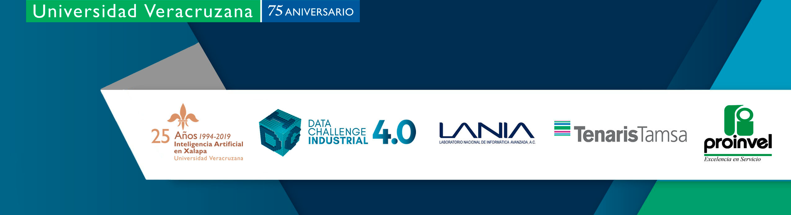

La perdida de producto útil, o merma, se refiere a la materia procesada que por algun motivo debe deshecharse y no se incorpora al producto final. En esta ocasion tenemos un conjunto de datos que nos permite conocer la trazabilidad de la perdida del producto a lo largo del proceso de manufactura. Esto es importante porque permite a la empresa estimar costos del producto final. La merma es un ejemplo macroscopico tangible del inevitable desgaste que ocurre en cualquier proceso natural o humano, y es una manifestacion del proceso de transformacion de la energia.
En algunas de las bases de datos disponibles la merma esta claramente especificada por el termino. En otras, la perdida de producto se especifica como recuperacion o como basura, con el significado que implica el termino. Se considera merma a todo aquel material que forma parte del proceso pero no contribuye al producto final, incluyendo el que no puede recuperarse. En el proceso de manufactura que van a conocer en esta ocasion, se tiene identificada merma en las partes individuales del proceso de produccion y esta registrada en el conjunto de datos que tienen a su disposicion.
Como parte del control de calidad de la produccion, cada tres semanas se contabiliza la merma generada
El reto consiste de los siguientes apartados:
Cada apartado contiene dos secciones con preguntas que los guiaran en el desarrollo del Reto. La primera seccion contiene preguntas que seran evaluadas y miden las competencias de su equipo en el apartado correspondiente. La segunda seccion de preguntas son preguntas adicionales que se proponen para explorar mas el contenido de los datos y potenciar su solucion.
Los apartados se iran habilitando de acuerdo al siguiente horario:
Sabado 26
Limpieza de datos general | 12:00 |
Estadísticas descriptivas generales | 13:30 |
Estadísticas descriptivas de la pérdida de producto | 15:30 |
Domingo 27
Modelo para la clasificación del tipo de merma | 11:30 |
Entrega de presentaciones | 16:30 |
Cada apartado será evaluado por el Comité Técnico y el Jurado de Expertos conforme sea recibido, tomando en cuenta el tiempo de retraso si lo hubiere.
La entrega de avances se debe realizar a través de la carpeta personalizada de cada equipo, la misma donde hicieron entrega de su Reto Filtro durante el proceso de inscripción. El sistema de entrega permanecerá abierto de modo que los equipos puedan entregar sus propuestas aun cuando se han abierto otros apartados.
El formato de entrega es libre, pero es imperativo que se responda de manera justificada cada una de las preguntas que se van a evaluar en cada apartado. En cada entrega debe proporcionarse como mínimo lo siguiente: